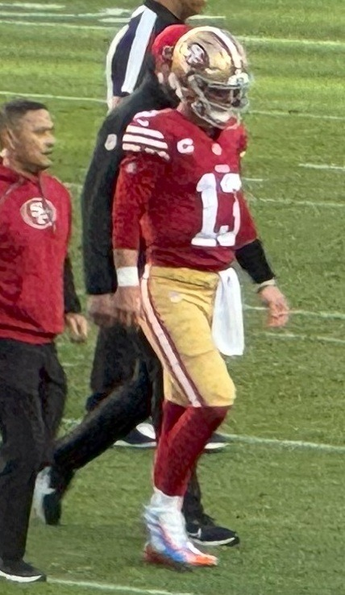

Latest Stories

Jerry Rice Says This Is the Year the 49ers Break the Super Bowl Drought
"I think this is the year for the Niners." The GOAT called his shot at Lake Tahoe, and the roster backs him up.

Casey Schmitt Is Having an All-Star Breakout Season, Even If the All-Star Game Didn't Notice
19 homers, a .494 slug, top-20 NL production at four positions, and a snub that should embarrass the roster machinery.

Tyler Mahle Finally Won a Game, and Casey Schmitt Made Sure It Counted
Seven strong innings from Mahle for his first win since April 22, a three-run Schmitt homer, and a 4-2 win over the Rockies.

The A's Lost 1-0 Again, Eight Straight Now, and They Are Coming Back to Earth Fast
Four-hit by five White Sox pitchers, a stranded leadoff triple in the eighth, and a free fall to 41-54.

This Might Be the Best Team Kyle Shanahan Has Ever Had
Purdy, a healthy McCaffrey, Evans and Kirk, and Bosa and Warner back from injury. If the 49ers finally stay healthy, this could be the year they win it all.

Giants at the All-Star Break: 41-55 and a Rookie Manager Learning on the Job
Fourth in the NL West, 20.5 back. The honest first-half breakdown, Tony Vitello's rookie half, and the reset coming at the August 3 deadline.

The Giants Bullpen Finally Held One: Erik Miller Slams the Door in a 3-1 Win Over the Rockies
After a sickening ninth-inning collapse to open the series, the Giants won two straight and Erik Miller closed it out clean. Adames had three hits, McDonald went seven.

A's at the All-Star Break: 41-55, a Nine-Game Skid, and the Mirage I Warned You About
First place to fourth, eight back, nine straight losses into the break. The first-half breakdown of the collapse and why the second half gets worse.

I Told You the A's Were a Mirage: Nine Straight Losses, 9-1 to the White Sox
One win in their last ten, a 7.09 ERA, a free fall to 41-53. This was always coming, and there is no reason to think it stops.

The Giants Blew Another One, and It Is the Same Sickening Story
Two outs from beating the worst team in baseball, the bullpen handed it back. Rockies 4, Giants 3, and it is time to talk about Vitello and Posey.

Rafael Devers Looks Wide Awake Again for the Giants
Another one out at Oracle Park, his 19th of the year, and after a short cold spell the Giants slugger looks locked in again.

The Giants Might Actually Have Something in Carson Whisenhunt
Two starts, two wins for the rookie lefty, and three homers in an 8-2 win over the Rockies.

The A's Got Swept and Have Now Lost Six Straight, 4-1 to the Tigers
Valdez retired the first 11, three Tigers homers, and a rookie went deep on his first swing.

Dylan Cease Nearly No-Hit One of the Worst Giants Teams I Can Remember
Eight and a third hitless innings, a first-inning grand slam off Webb, a 10-0 beatdown at home.

A Rookie Named Melton Made the A's Look Like a Beer-League Team, 6-1
Nine strikeouts from a kid on his sixth start, one run of offense that scored on an error.

The Sharks Rebuild Finally Has a Pulse, and His Name Is Macklin Celebrini
Seven straight springs without playoff hockey. So why is the Tank worth watching again?

The 49ers Are Still Paying For Vegas
They had the Chiefs on the ropes in Allegiant Stadium and let it go. That overtime still shapes everything.

I Didn't Like the Tony Vitello Hire, and I'm Not Going to Pretend Otherwise
The Giants had a chance to make a grown-up baseball decision. Instead they made a headline.

The Warriors Are Out of Easy Answers, and That's the Whole Story
The dynasty bought Golden State years of benefit of the doubt. That grace period is over.
Team Hubs


Bay Area Dynasties

The 49ers Dynasty
Walsh's West Coast offense, Montana to Rice, the team of the decade.

The Warriors Dynasty
Curry, the Splash Brothers, a 73-win season, and four titles.

The Even-Year Giants
Three titles in five years, Bochy's bullpen, Bumgarner's October.

A's Moneyball
Billy Beane, the smallest payroll, and 20 wins in a row.
Bay Area Sports History


The Bay Area Timeline
The 49ers Dynasty

The Bonds Era
A's Moneyball
Even-Year Giants
Warriors Dynasty

The Roaracle Era

Recent Heartbreak
Opinion & Columns
Brandon Aiyuk Has Gone Full Antonio Brown
The 49ers success story that curdled.
49ers Panic MeterThe 49ers Are Still Paying For Vegas
How worried should the Faithful be?
Warriors Reality CheckThe Warriors Are Out of Easy Answers
The dynasty, minus the nostalgia.
Giants October WatchThe Giants Keep Promising October
Contender, or just company?
Bay Area VillainsThe A's Play in Sacramento Now
The people who did our teams dirty.
The Bay ColumnWhy the Bay Area Is a Sports Capital
The big-picture regional take.